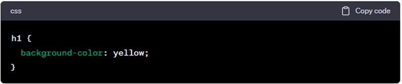

Sobre mi

¡Hola!, soy Mariana Carballo, diseñadora web.
Me especializo en el diseño y desarrollo de sitios web.
Todo comenzó cuando se despertó en mí la curiosidad de saber que hay detrás de un sitio web, que no ven los usuarios.
Esto me llevo por el camino de capacitarme y convertirme en profesional.
Durante un periodo estuve a cargo de un hermoso equipo de diseñadores gráficos y técnicos multimediales, con los que
trabajé codo a codo y se generaba una retroalimentación profesional.
Trabajó como diseñadora web freelance, facilitando la transformación digital de emprendedores para potenciar
sus negocios en internet. Diseño experiencias digitales centradas en el usuario, que impacten positivamente en la satisfacción de los mismos.
Habilidades
Al pasar los años e ir ganando experiencia he adquirido habilidades con estas herramientas y lenguajes.


Sublime-Text
jquery
Dreamweaver

Bootstrap


Visual Studio
Photoshop
Premiere
After- effects

Laragon
Github
Lenguajes y herramientas
Describo algunas de las herramientas y lenguajes con el nivel de conocimiento que manejo en ellos.
HTML
HTML (HyperText Markup Language) es un lenguaje de marcado utilizado para estructurar y presentar contenido en la web. Es el lenguaje estándar utilizado para crear páginas web y se compone de una serie de elementos o etiquetas que definen la estructura y el significado del contenido.
HTML utiliza una sintaxis sencilla basada en etiquetas, que se definen mediante corchetes angulares (<>) y se cierran con una barra diagonal (/) al final de la etiqueta. Estas etiquetas permiten a los navegadores web interpretar el contenido y mostrarlo adecuadamente.
Cada elemento HTML tiene un propósito específico y puede contener otros elementos o texto. Algunos elementos comunes de HTML incluyen:
Estos son solo algunos ejemplos, pero HTML cuenta con una amplia variedad de etiquetas que permiten crear y estructurar el contenido de una página web de manera flexible.
Es importante mencionar que HTML por sí solo no tiene capacidad para realizar acciones dinámicas en una página web. Para agregar interactividad y funcionalidad más avanzada, se suele combinar HTML con otros lenguajes como CSS (Cascading Style Sheets) para el diseño visual y JavaScript para la interacción y la programación del lado del cliente.
CSS
CSS (Cascading Style Sheets) es un lenguaje de estilo utilizado para describir el aspecto y la presentación de un documento HTML o XML. CSS trabaja en conjunto con HTML para definir la apariencia visual de los elementos y componentes de una página web.
Mientras que HTML se encarga de estructurar el contenido y los elementos de una página web, CSS se utiliza para aplicar estilos y diseños a esos elementos. Permite definir características como el color, tamaño, fuente, margen, espaciado, posición y otros atributos visuales de los elementos HTML.
Mediante CSS, puedes crear reglas de estilo que se aplican a diferentes elementos en una página o a grupos de elementos específicos. Estas reglas se definen utilizando selectores, que indican qué elementos se verán afectados, y declaraciones, que establecen las propiedades y los valores que se aplicarán a esos elementos.
Por ejemplo, la siguiente regla CSS cambia el color de fondo de todos los encabezados h1 en una página web:

Existen varias formas de aplicar CSS a una página web. Puedes incluir reglas de estilo directamente en la sección "style" dentro de la etiqueta "head" del documento "HTML", o bien, puedes enlazar un archivo CSS externo utilizando la etiqueta "link".
CSS proporciona una gran flexibilidad para personalizar la apariencia de una página web, permitiendo controlar la disposición de los elementos, los colores, las fuentes, los efectos visuales y muchos otros aspectos visuales. Además, CSS también ofrece características avanzadas como la capacidad de aplicar estilos responsivos para adaptarse a diferentes tamaños de pantalla, animaciones y transformaciones, entre otros.
JavaScript
JavaScript es un lenguaje de programación de alto nivel y orientado a objetos que se utiliza principalmente en el desarrollo web. Es un lenguaje de scripting que permite agregar interactividad y funcionalidad a las páginas web.
A diferencia de HTML y CSS, que se centran en la estructura y el diseño de una página web, JavaScript se encarga de la programación y la manipulación dinámica de elementos en la página. Con JavaScript, puedes responder a eventos, realizar cálculos, interactuar con el usuario y modificar el contenido y el comportamiento de una página web en tiempo real.
JavaScript se ejecuta en el navegador web del cliente, lo que significa que el código JavaScript se descarga junto con la página web y se interpreta en el navegador del usuario. Esto permite realizar acciones del lado del cliente sin tener que comunicarse constantemente con el servidor.
JavaScript es ampliamente utilizado en el desarrollo web, tanto en el lado del cliente (frontend) como en el lado del servidor (backend), gracias a frameworks y bibliotecas populares como React, Angular, Node.js, entre otros.
PHP
PHP (Hypertext Preprocessor) es un lenguaje de programación de código abierto y de propósito general, especialmente diseñado para el desarrollo web. Fue creado originalmente en 1994 por Rasmus Lerdorf y ha evolucionado desde entonces para convertirse en uno de los lenguajes más populares en la creación de aplicaciones web dinámicas.
PHP se ejecuta en el lado del servidor, lo que significa que el código PHP se procesa en el servidor web antes de enviar la página resultante al cliente. Es compatible con una amplia gama de servidores web, como Apache, Nginx e IIS, y se integra fácilmente con bases de datos como MySQL, PostgreSQL y otros sistemas de gestión de bases de datos.
PHP se utiliza ampliamente en la industria web para desarrollar sitios web dinámicos, aplicaciones web, sistemas de gestión de contenido (CMS) como WordPress y Drupal, tiendas en línea y muchos otros tipos de aplicaciones. Su popularidad se debe a su facilidad de uso, versatilidad, flexibilidad y su amplio ecosistema de desarrollo.
MySQL
MySQL es un sistema de gestión de bases de datos relacionales (RDBMS, por sus siglas en inglés) de código abierto. Fue desarrollado por la empresa sueca MySQL AB, y actualmente es propiedad de Oracle Corporation.
MySQL es ampliamente utilizado en el desarrollo de aplicaciones web y otros sistemas que requieren almacenamiento y gestión de datos estructurados. Ofrece una combinación de rendimiento, confiabilidad y facilidad de uso, lo que lo convierte en una opción popular tanto para proyectos pequeños como para aplicaciones empresariales a gran escala.
Las principales características y funcionalidades de MySQL son las siguientes:
Illustrator
Adobe Illustrator es un programa de diseño gráfico vectorial desarrollado por Adobe Systems. Se utiliza para crear ilustraciones, gráficos, logotipos, diseños de impresión y otros elementos gráficos de alta calidad.
A diferencia de las imágenes rasterizadas (píxeles), que se componen de una cuadrícula de píxeles, los gráficos vectoriales se crean utilizando fórmulas matemáticas que definen líneas, curvas y formas. Esto permite que los gráficos vectoriales se escalen de forma perfecta sin perder calidad, lo que los hace ideales para logotipos y diseños que necesitan adaptarse a diferentes tamaños.
Adobe Illustrator es ampliamente utilizado por diseñadores gráficos, ilustradores, artistas y profesionales del diseño en general. Es una herramienta poderosa y versátil para la creación de gráficos vectoriales y diseños de alta calidad.
XAMPP
XAMPP proporciona una forma conveniente de configurar un servidor web local en tu máquina, lo que te permite desarrollar y probar aplicaciones web antes de implementarlas en un servidor en vivo. Es compatible con múltiples sistemas operativos, como Windows, macOS y Linux, y se instala como un conjunto de software preconfigurado.
Los componentes principales del paquete:
XAMPP también incluye otras herramientas y servicios útiles para el desarrollo web, como phpMyAdmin (una interfaz de administración para MySQL), OpenSSL (para la seguridad y cifrado), FileZilla FTP Server (para transferencia de archivos), entre otros.
WordPress
WordPress es un sistema de gestión de contenido (CMS, por sus siglas en inglés) de código abierto y una plataforma de creación de sitios web. Fue lanzado por primera vez en 2003 y se ha convertido en una de las plataformas más populares para la creación y administración de sitios web.
WordPress se basa en el lenguaje de programación PHP y utiliza una base de datos (generalmente MySQL) para almacenar y gestionar el contenido del sitio. Su objetivo principal es facilitar la creación y administración de sitios web, incluso para aquellos sin conocimientos técnicos avanzados.
Las características principales de WordPress incluyen: